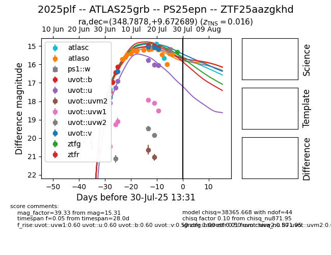

Target 2025plf at 2025-07-30 13:31, see:
FINK: fink-portal.org/2025plf
Lasair: lasair-ztf.lsst.ac.uk/objects/2025plf
ALeRCE: alerce.online/object/2025plf
TNS: wis-tns.org/object/2025plf
YSE: ziggy.ucolick.org/yse/transient_detail/2025plf
alt names
ZTF25aazgkhd (ztf,fink)
2025plf (tns,yse)
ATLAS25grb (atlas)
PS25epn (panstarrs)
coordinates:
equatorial (ra, dec) = (348.7878,+9.67269)
galactic (l, b) = (87.2510,-46.42104)
photometry
last atlasc=15.66, atlaso=15.45, ps1::w=15.20, uvot::b=15.08, uvot::u=16.04, uvot::uvm2=21.04, uvot::uvw1=18.51, uvot::uvw2=19.83, uvot::v=15.15, ztfg=15.31, ztfr=16.97
4 atlasc, 20 atlaso, 4 ps1::w, 6 uvot::b, 6 uvot::u, 2 uvot::uvm2, 6 uvot::uvw1, 3 uvot::uvw2, 5 uvot::v, 2 ztfg, 1 ztfr detections
